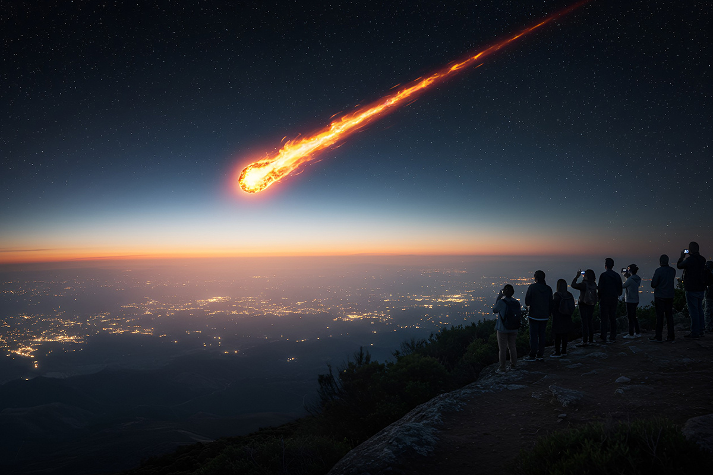

Don’t Look Up en la vida real
¿Necesitamos un seguro contra asteroides?
¿Necesitamos un seguro contra asteroides?

El anuncio del posible impacto del Asteroide 2024 YR4 en la Tierra nos hizo recordar la película Don’t Look Up y analizar ciertos factores que debimos aprender luego de esta sátira sobre la sociedad moderna. Si no la viste, no te preocupes: ¡aquí te hacemos un breve resumen!
La historia sigue a dos astrónomos (Leonardo DiCaprio y Jennifer Lawrence) que intentan advertir al mundo sobre un cometa que podría acabar con la humanidad, pero que son ignorados por todos: medios, políticos e incluso la población.

Bueno, resulta que en nuestro querido Chile se descubrió el Asteroide 2024 YR4, que inicialmente parecía tener una probabilidad de impacto contra la Tierra en diciembre de 2032. De hecho, por su potencial riesgo, la Organización de las Naciones Unidas (ONU) activó por primera vez el “Protocolo de Seguridad Planetaria”.
Pero antes de que empieces a construir tu búnker, hay buenas noticias: gracias a los expertos en observación espacial y nuevos cálculos, la Administración Nacional de Aeronáutica y el Espacio (NASA) redujo las posibilidades de impacto a casi cero. ¡Fiuf!
Y, entonces, ¿qué podemos aprender de esta situación -que tuvo al mundo inmerso en gran incertidumbre por varios días-, y de la película?
Para mí, es siempre confiar en que la ciencia es nuestra mejor aliada. En Don’t Look Up, (spoiler alert) la falta de acción y la negación llevaron a un final catastrófico. Mientras que, en la vida real, la detección temprana y la respuesta adecuada (considerando misiones espaciales de la NASA para desviar la trayectoria del asteroide) nos permiten evitar desastres y, por supuesto, mantener la calma.
Con esta situación, ahora nos quedamos con una pregunta interesante: ¿necesitamos acaso un seguro contra asteroides? Aunque la probabilidad de que un asteroide impacte directamente en tu casa es baja (a menos que vivas en Talca), considéralo. Broma. ¡Los queremos, talquinos!
Esta noticia, también nos recuerda que, aunque enfrentamos desafíos globales (crisis climática, hídrica, desinformación, etc.), tenemos la capacidad de prevenir catástrofes. ¡Cómo cuando contratas el seguro de tu auto en ComparaOnline!
Así que, en lugar de ignorar las advertencias como en la película, ¿por qué no celebramos que estamos preparados? ¡Salud!
 Seguros
SegurosPodemos decir que el Festival de Viña es un evento que nos marca que estamos en verano, que cuando lo veamos seguro estamos tomando unas…
 Seguros
SegurosEl crecimiento de los autos eléctricos está siendo cada vez mayor, ya no nos sorprende ver estaciones de carga para estos, ni que algún…
 Seguros
Seguros¿Se imaginan ser los primeros en hacer algo? Es algo que con la realidad actual no sucede, ya no había nada nuevo bajo el sol, pero Compara…